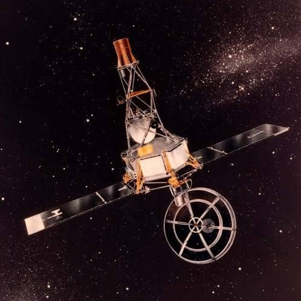

01
TOXIC TWIN
Venus is often called "Earth's twin" because they're similar in size and structure, but Venus has extreme surface heat and a dense, toxic atmosphere. If the Sun were as tall as a typical front door, Earth and Venus would each be about the size of a nickel.
02
SECOND ROCK
Venus is the second closest planet to the Sun, orbiting at a distance of about 67 million miles (108 million kilometers)
03
LONG DAYS, SHORT YEARS
Venus rotates very slowly on its axis - one day on Venus lasts 243 Earth days. The planet orbits the Sun faster than Earth, however, so one year on Venus takes only about 225 Earth days, making a Venusian day longer than its year!
04
DIVERSE TERRAIN
Venus has a solid surface covered in dome-like volcanoes, rifts, and mountains, with expansive volcanic plains and vast, ridged plateaus.
05
YOUTHFUL SURFACE
The average surface of Venus is less than a billion years old, and possibly as young as 150 million years old - which is relatively young from a geological perspective. This is a major conundrum for scientists - they don't know exactly what happened that made Venus completely resurface itself.
06
RUNAWAY GREENHOUSE
Venus' thick atmosphere traps heat creating a runaway greenhouse effect - making it the hottest planet in our solar system with surface temperatures hot enough to melt lead. The greenhouse effect makes Venus roughly 700°F (390°C) hotter than it would be without a greenhouse effect.
07
STINKY CLOUDS
Venus is permanently shrouded in thick, toxic clouds of sulfuric acid that start at an altitude of 28 to 43 miles (45 to 70 kilometers). The clouds smell like rotten eggs!
08
SPACECRAFT MAGNET
Venus was the first planet explored by a spacecraft and was intensely studied early in the history of space exploration. Venus was also the first planet whose surface was reached by a spacecraft from Earth. The intense heat means landers have only survived for a couple of hours.
09
LIFE ON VENUS
Venus is an unlikely place for life as we know it, but some scientists theorize microbes might exist high in the clouds where it's cooler and the pressure is similar to Earth's surface. Phosphine, a possible indicator of microbial life, has been observed in the clouds.
10
BACKWARD SUNRISE
Venus rotates backward on its axis compared to most planets in our solar system. This means the Sun rises in the west and sets in the east, opposite of what we see on Earth.

FIRST SPACECRAFT TO EXPLORE VENUS